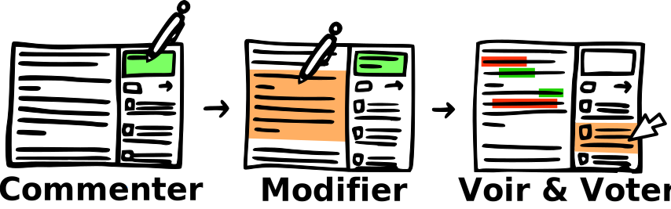

Solution pour l’écriture collaborative
Proposer des modifications du texte que l’on commente
Avec commented.it plus besoin d’expliquer ce que vous changeriez dans le texte... Proposez directement une modification !
Pour essayer, double-cliquez sur le texte ci-dessous :
Hermione est une « née moldue ». La jeune fille apparaît pour la première fois dans le
Poudlard Express où elle fait la rencontre de Ron Weasley et de Harry Potter pour
leur demander un renseignement. En l'écoutant, Harry se rend rapidement compte qu'elle
est très cultivée et a manifestement lu tous les livres traitant de sorcellerie qui lui
étaient accessibles. À Poudlard, elle répond toujours la première en classe et tente
régulièrement d'empêcher Harry et Ron d'enfreindre le règlement, ce qui lui attire leur
antipathie — surtout celle de Ron. Plus tard, après avoir été sauvée d'un troll par les
deux garçons, elle les aide pour leurs devoirs et leçons et se montre moins ascétique.
Petit à petit, une véritable amitié naît entre Harry, Ron et Hermione.
Une fois validée, pour voir votre proposition de modification ou bien celles des autres cliquez sur les commentaires en orange
Un texte séparé en blocs
Commented.it propose une interface originale : un fil de discussion en colonne à droite qui accompagne la lecture. Le texte est séparé en blocs et à chaque bloc correspond une conversation distincte. Ainsi les différentes parties du texte peuvent être débattues séparément.
Pour passer d'un bloc à l'autre, déplacez-vous ou cliquez sur les blocs ci-dessous :
Hermione est une « née moldue ». La jeune fille apparaît pour la première fois
dans le Poudlard Express où elle fait la rencontre de Ron Weasley et de Harry
Potter pour leur demander un renseignement. En l'écoutant, Harry se rend
rapidement compte qu'elle est très cultivée et a manifestement lu tous les
livres traitant de sorcellerie qui lui étaient accessibles. À Poudlard, elle
répond toujours la première en classe et tente régulièrement d'empêcher Harry
et Ron d'enfreindre le règlement, ce qui lui attire leur antipathie — surtout
celle de Ron. Plus tard, après avoir été sauvée d'un troll par les deux garçons,
elle les aide pour leurs devoirs et leçons et se montre moins ascétique.
Petit à petit, une véritable amitié naît entre Harry, Ron et Hermione.
Au cours d'un match de Quidditch, Hermione enflamme discrètement la cape du professeur Rogue
qu'elle suspecte, à tort, d'ensorceler le balai de Harry pour le faire tomber. Avec
Ron, elle aide Harry à franchir les obstacles pour trouver la Pierre Philosophale.
Pendant la remise de la Coupe des Quatre Maisons, le professeur Dumbledore la récompense de 50 points pour
avoir résolu l'énigme des potions de Rogue, qui avait été mise au point dans
le but d'empêcher quiconque — et surtout Voldemort — de s'approprier la pierre.
De retour à Poudlard, Hermione, toujours aussi studieuse, est particulièrement
sensible au charme du nouveau professeur de défense contre les Forces du mal,
Gilderoy Lockhart. Cependant, les trois amis sont vite confrontés à un événement
inattendu : la légendaire chambre des secrets aurait été rouverte. Selon la
légende, la chambre cacherait un monstre destiné à épurer Poudlard de tous les
nés moldus » selon les vœux de Salazar Serpentard, fondateur de la Maison qui porte son nom.
Au cours de l'année, plusieurs personnes sont retrouvées pétrifiées.
Pourquoi utiliser commented.it
Pour écrire à plusieursCommented.it a été conçu pour l’écriture collaborative. Il offre le moyen de proposer facilement des modifications, de débattre et de voter. De plus il offre une interface originale qui accompagne le texte et sépare les débats par blocs. |
Pour les projets ouverts à tousGrâce à commented.it chacun peut proposer des modifications sans modifier réellement le texte. Ainsi vous pouvez ouvrir vos projets à tous et ne garder que les propositions que vous souhaitez. |
Pour les projets massifsIl existe déjà des outils pour l’écriture collaborative (Google Docs, mails…) mais qui ne sont plus adaptés dès que le nombre de participants devient trop important. Commented.it a été conçu pour répondre à ce manque. 5, 10, 50, 200, 2000… Commented.it est adapté à tout nombre de participants. |
Les projets de commented.it
| unkilodeplumes est le grand projet d’écriture d’un roman collaboratif. C’est pour ce projet que commented.it a été pensé et créé. En savoir plus sur cette page... | Bien plus bientôt...Nous avons beaucoup de projets avec commented.it et sommes en train de travailler sur plusieurs projets souaitant utiliser notre outil. Vous aussi ? Contactez-nous. |
Commented.it, c'est libre !Vous pouvez donc l'utiliser librement pour tous vos projets et l'améliorer. |